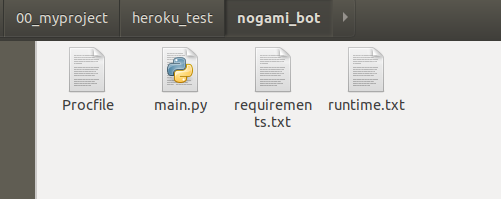
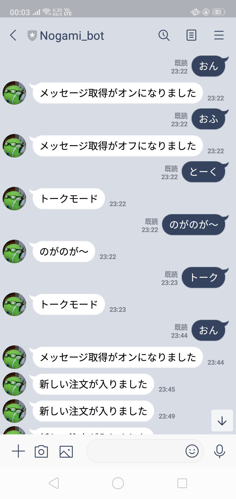

はじめに
現在ちょっとした副業みたいなものをやってて，通知がメールで来るんですけどgmailの通知がなんだか調子が良くなかったため，見過ごし対策のためにLINE botを作ってみたらなかなか面白かったので記事にしました．あと，もともとLINE botを使ってお家を便利にしようと思っていたのもあります．そっちの方は全然進んでないんですけどね．．．
事前準備
- git
- Herokuアカウント
- LINE developersの登録
- python環境
Git
省略Herokuとは
アプリの構築，提供，監視に役立つクラウドプラットフォームです．今回はサーバ代わりに使います． https://jp.heroku.com/whatHeroku CLIをインストールしておきます．
https://devcenter.heroku.com/articles/heroku-cli
LINE developersの登録
以下から登録https://developers.line.biz/ja/services/messaging-api/
登録が済んだら，Basic settingsの下のところにある'Channel secret'とMessaging APIの下のところにある'Channel access token'の文字列をひかえる．(Channel access tokenはissueをクリックして生成)
Heroku関連
今回の最小構成だとこのようになります． Procfile
プログラムの実行方法を定義$ web: python main.py
main.py
プログラムのスクリプトファイルrequirements.txt
使用するライブラリを記述ローカル環境でpipで入れる代わりにここに記入
flask==1.1.2 line-bot-sdk==1.6.0 gunicorn
Herokuに登録する
$ heroku login
アプリケーション登録
$ heroku create アプリケーション名エラーが出たら以下のコマンドを実行してからもう一度やる
$ heroku config --app アプリケーション名
環境変数の設定
$ heroku config:set YOUR_CHANNEL_ACCESS_TOKEN="【LineDevelopersのChannelの設定ページで表示されたAccessトークン】" --app 【アプリケーション名】 $ heroku config:set YOUR_CHANNEL_SECRET="【LineDevelopersのChannelの設定ページで表示されたSECRET】" --app 【アプリケーション名】きちんと設定できたか確認
$ heroku config --app 自分のアプリケーション名出力例
› Warning: heroku update available from 7.42.4 to 7.42.6. === linebot-nogami Config Vars YOUR_CHANNEL_ACCESS_TOKEN: *********** YOUR_CHANNEL_SECRET: ***********
LINE bot関連
Webhookの設定
Webhook URL : https://アプリケーション名.herokuapp.com/callbackとすればOK
あとは，初期設定されてる余計な返答の無効化などすると良いとおもいます．
デプロイする
プログラムや設定ファイルなどを置いてるディレクトリに移動し以下を実行．$ git init $ git add $ git commit -m "first commit" $ git push heroku masterこれで不具合がなければおしまい．
おうむ返しと注文管理しかしてないけどなかなか面白いです． 
ログの確認
$ heroku logs --tail
最後にmain.pyのソースコード
from flask import Flask, request, abort
import os
from linebot import LineBotApi, WebhookHandler
from linebot.exceptions import InvalidSignatureError
from linebot.models import MessageEvent, TextMessage, TextSendMessage
import time
status = False
user_dict = {}
talk_mode = False
app = Flask(__name__)
#環境変数取得
YOUR_CHANNEL_ACCESS_TOKEN = os.environ["YOUR_CHANNEL_ACCESS_TOKEN"]
YOUR_CHANNEL_SECRET = os.environ["YOUR_CHANNEL_SECRET"]
line_bot_api = LineBotApi(YOUR_CHANNEL_ACCESS_TOKEN)
handler = WebhookHandler(YOUR_CHANNEL_SECRET)
@app.route("/order_access")
def order_access():
message = '新しい注文が入りました'
push_list = []
for key in user_dict.keys():
if user_dict[key]:
push_list.append(key)
for id in push_list:
line_bot_api.push_message(id, TextSendMessage(text=message))
return "むかしむかし，あるところにおじいさんとおばあさんがいましたとさ。めでたしめでたし。"
@app.route("/callback", methods=['POST'])
def callback():
# get X-Line-Signature header value
signature = request.headers['X-Line-Signature']
# get request body as text
body = request.get_data(as_text=True)
app.logger.info("Request body: " + body)
try:
handler.handle(body, signature)
except InvalidSignatureError:
abort(400)
return 'OK'
@handler.add(MessageEvent, message=TextMessage)
def handle_message(event):
global status
global user_dict
global talk_mode
profile = line_bot_api.get_profile(event.source.user_id)
print(profile.user_id)
user_id = profile.user_id
user_name = profile.display_name
print(user_name)
if user_id not in user_dict:
user_dict[user_id] = False # 通知オフ
text = event.message.text
if text == 'on' or text == 'ON' or text == 'オン' or text == 'おん':
user_dict[user_id] = True
message = 'メッセージ取得がオンになりました'
# user_dict[user_id] = True
elif text == 'off' or text == 'OFF' or text == 'オフ' or text == 'おふ':
user_dict[user_id] = False
message = 'メッセージ取得がオフになりました'
elif text == 'リスト' or text == 'りすと' or text == 'list' or text == 'ヘルプ' or text == 'へるぷ' or text == 'help':
message = '「オン」：注文が入ると知らせてくれるよ！\n「オフ」：お知らせを止めるよ！\n「トーク」：おうむ返し（遊び）'
elif text == 'トーク' or text == 'とーく' or text =='talk':
talk_mode = not talk_mode
if talk_mode:
message = 'トークモード：ON'
else:
message = 'トークモード：OFF'
elif talk_mode:
message = text
else:
message = 'ちょっと何言ってるか，わからんちん。\n「ヘルプ」と入力すると使い方が分かるよ！'
line_bot_api.reply_message(event.reply_token, TextSendMessage(text=message))
if __name__ == "__main__":
# app.run()
port = int(os.getenv("PORT"))
app.run(host="0.0.0.0", port=port)